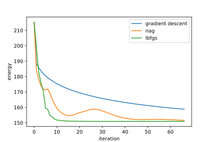

|
Home | Libraries | People | FAQ | More |


#include <boost/math/optimization/lbfgs.hpp> namespace boost { namespace math { namespace optimization { namespace rdiff = boost::math::differentiation::reverse_mode; /** * * @brief Limited-memory BFGS (L-BFGS) optimizer * * The `lbfgs` class implements the Limited-memory BFGS optimization algorithm, * a quasi-Newton method that approximates the inverse Hessian using a rolling * window of the last `m` updates. It is suitable for medium- to large-scale * optimization problems where full Hessian storage is infeasible. * * @tparam> ArgumentContainer: container type for parameters, e.g. * std::vector<RealType> * @tparam> RealType scalar floating type (e.g. double, float) * @tparam> Objective: objective function. must support "f(x)" evaluation * @tparam> InitializationPolicy: policy for initializing x * @tparam> ObjectiveEvalPolicy: policy for computing the objective value * @tparam> GradEvalPolicy: policy for computing gradients * @tparam> LineaSearchPolicy: e.g. Armijo, StrongWolfe * * https://en.wikipedia.org/wiki/Limited-memory_BFGS */ template<typename ArgumentContainer, typename RealType, class Objective, class InitializationPolicy, class ObjectiveEvalPolicy, class GradEvalPolicy, class LineSearchPolicy> class lbfgs { public: lbfgs(Objective&& objective, ArgumentContainer& x, size_t m, InitializationPolicy&& ip, ObjectiveEvalPolicy&& oep, GradEvalPolicy&& gep, lbfgs_update_policy<RealType>&& up, LineSearchPolicy&& lsp); void step(); }; /* Convenience overloads */ /* create l-bfgs optimizer with * objective function * argument container * optional * - history size : how far to look in the past */ template<class Objective, typename ArgumentContainer> auto make_lbfgs(Objective&& obj, ArgumentContainer& x, std::size_t m = 10); template<class Objective, typename ArgumentContainer, class InitializationPolicy> auto make_lbfgs(Objective&& obj, ArgumentContainer& x, std::size_t m, InitializationPolicy&& ip) /* construct lbfgs with a custom initialization and line search policy */ template<class Objective, typename ArgumentContainer, class InitializationPolicy, class LineSearchPolicy> auto make_lbfgs(Objective&& obj, ArgumentContainer& x, std::size_t m, InitializationPolicy&& ip, LineSearchPolicy&& lsp); /* construct lbfgs optimizer with: * custom initialization policy * function evaluation policy * gradient evaluation policy * line search policy */ template<class Objective, typename ArgumentContainer, class InitializationPolicy, class FunctionEvalPolicy, class GradientEvalPolicy, class LineSearchPolicy> auto make_lbfgs(Objective&& obj, ArgumentContainer& x, std::size_t m, InitializationPolicy&& ip, FunctionEvalPolicy&& fep, GradientEvalPolicy&& gep, LineSearchPolicy&& lsp); } // namespace optimization } // namespace math } // namespace boost
LBFGS (limited memory BFGS) is a quasi-Newton optimizer that builds an approximation to the inverse Hessian using only first-order information (function values and gradients). Unlike full BFGS, it does not store or update a dense matrix; instead it maintains a fixed size history of the most recent m correction pairs and computes the search direction using a two loop recursion. In practice, LBFGS often converges in significantly fewer iterations than normal gradient based methods, especially on smooth, ill-conditioned objectives.
At each iteration k, LBFGS: * Evaluates the gradient g_k = grad(f(x_k)). * Computes a quasi-Newton search direction using the last m updates. * Chooses a step length alpha_k using a line search policy. * Updates parameters:
x_k += alpha_k p_k
* Forms the correction pairs:
s_k = x_k - x_prev y_k = g_k - g_prev
and stores up to the last m
pairs (s_k, y_k).
The line search is a key part of practical LBFGS: it typically removes the need to hand-tune a learning rate and improves robustness.
Objective&&
obj : objective function to
minimize.
ArgumentContainer&
x : variables to optimize over.
Updated in-place.
std::size_t m
: history size. Typical values are 5–20. Default is 10. Larger m can
improve directions but increases memory and per-step cost.
InitializationPolicy&& ip
: Initialization policy for optimizer state and variables. Users may
supply a custom initialization policy to control how the argument container
and any AD-specific runtime state : i.e. reverse-mode tape attachment/reset
are initialized. By default, the optimizer uses the same initialization
as gradient descent, taking the user provided initial values in x and
initializing the internal momentum/velocity state to zero. Custom initialization
policies are useful for randomized starts, non rvar AD types, or when
gradients are supplied externally. Check the docs for Reverse Mode autodiff
policies for initialization policy structure to write custom policies.
ObjectiveEvalPolicy&&
oep : policy for evaluating
the objective function value at a given x. By default this is a reverse-mode
AD evaluation policy when using rvar.
GradEvalPolicy&&
gep : policy for evaluating
the gradient of the objective. By default this is a reverse-mode AD gradient
evaluation policy when using rvar.
LineSearchPolicy&&
lsp : policy for selecting
the step length alpha along a search direction. Determines the acceptance
criteria and how many function/gradient evaluations may be performed
during a step Default is Strong Wolfe, but Armijo is an option. Strong
Wolfe uses both function and gradient information to ensure good curvature
conditions, while Armijo relies only on function decrease and is simpler
but less robust for quasi-Newton methods.
#include <boost/math/differentiation/autodiff_reverse.hpp> #include <boost/math/optimization/lbfgs.hpp> #include <boost/math/optimization/minimizer.hpp> #include <cmath> #include <fstream> #include <iostream> #include <random> #include <string> namespace rdiff = boost::math::differentiation::reverse_mode; namespace bopt = boost::math::optimization; double random_double(double min = 0.0, double max = 1.0) { static thread_local std::mt19937 rng{std::random_device{}()}; std::uniform_real_distribution<double> dist(min, max); return dist(rng); } template<typename S> struct vec3 { /** * @brief R^3 coordinates of particle on Thomson Sphere */ S x, y, z; }; template<class S> static inline vec3<S> sph_to_xyz(const S& theta, const S& phi) { /** * convenience overload to convert from [theta,phi] -> x, y, z */ return {sin(theta) * cos(phi), sin(theta) * sin(phi), cos(theta)}; } template<typename T> T thomson_energy(std::vector<T>& r) { /* inverse square law */ const size_t N = r.size() / 2; const T tiny = T(1e-12); T E = 0; for (size_t i = 0; i < N; ++i) { const T& theta_i = r[2 * i + 0]; const T& phi_i = r[2 * i + 1]; auto ri = sph_to_xyz(theta_i, phi_i); for (size_t j = i + 1; j < N; ++j) { const T& theta_j = r[2 * j + 0]; const T& phi_j = r[2 * j + 1]; auto rj = sph_to_xyz(theta_j, phi_j); T dx = ri.x - rj.x; T dy = ri.y - rj.y; T dz = ri.z - rj.z; T d2 = dx * dx + dy * dy + dz * dz + tiny; E += 1.0 / sqrt(d2); } } return E; } template<class T> std::vector<rdiff::rvar<T, 1>> init_theta_phi_uniform(size_t N, unsigned seed = 12345) { const T pi = T(3.1415926535897932384626433832795); std::mt19937 rng(seed); std::uniform_real_distribution<T> unif01(T(0), T(1)); std::uniform_real_distribution<T> unifm11(T(-1), T(1)); std::vector<rdiff::rvar<T, 1>> u; u.reserve(2 * N); for (size_t i = 0; i < N; ++i) { T z = unifm11(rng); T phi = (T(2) * pi) * unif01(rng) - pi; T theta = std::acos(z); u.emplace_back(theta); u.emplace_back(phi); } return u; } int main(int argc, char* argv[]) { if (argc != 2) { std::cerr << "Usage: " << argv[0] << " <N>\n"; return 1; } const int N = std::stoi(argv[1]); auto u_ad = init_theta_phi_uniform<double>(N); auto lbfgs_opt = bopt::make_lbfgs(&thomson_energy<rdiff::rvar<double, 1>>, u_ad); // filenames std::string pos_filename = "thomson_" + std::to_string(N) + ".csv"; std::string energy_filename = "lbfgs_energy_" + std::to_string(N) + ".csv"; std::ofstream pos_out(pos_filename); std::ofstream energy_out(energy_filename); energy_out << "step,energy\n"; auto result = minimize(lbfgs_opt); for (int pi = 0; pi < N; ++pi) { double theta = u_ad[2 * pi + 0].item(); double phi = u_ad[2 * pi + 1].item(); auto r = sph_to_xyz(theta, phi); pos_out << pi << "," << r.x << "," << r.y << "," << r.z << "\n"; } auto E = lbfgs_opt.objective_value(); int i = 0; for(auto& obj_hist : result.objective_history) { energy_out << i << "," << obj_hist << "\n"; ++i; } energy_out << "," << E << "\n"; pos_out.close(); energy_out.close(); return 0; }
For the N =
2 case, LBFGS requires only 5 iterations
to converge, the nesterov version of this problem converges in 4663 iterations with default parameters, and
gradient descent requires 93799
iterations. Convergence is assumed to mean the norm of the gradient is less
than 1e-3. Below is a plot showcasing
the 3 different methods for the N=20 particle
case.

In this case, gradient descent reaches the maximum number of iterations,
and does not converge, nag converges in 150
iterations, and LBFGS converges in 67
iterations.